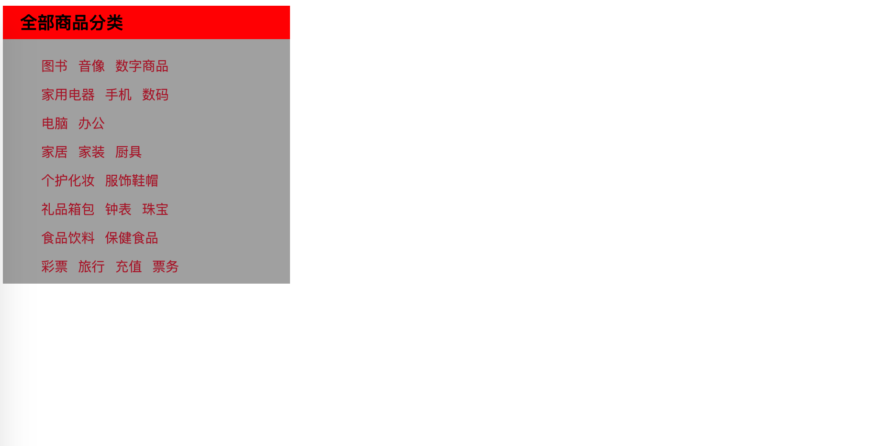
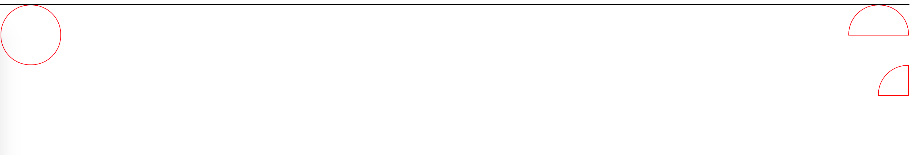

CSS 语法
2021-08-23 20:16 字数：9403 标签： CSS WEB概述
CSS，即Cascading Style Sheets，中文意思层叠样式表。CSS不仅可以静态地修饰网页，还可以配合各种脚本语言动态地对网页各元素进行格式化。其实简单说就是美化HTML页面。
美化的内容有：
- 字体
- 颜色
- 边距
- 背景图片
- 网页定位
- 网页浮动
- 等等
CSS版本
- CSS1.0 基本的样式，如字体
- CSS2.0 提出使用div和css来达到HTML与CSS结构分离的思想
- CSS2.1 浮动 定位 …
- CSS3.0 圆角 边框 动画 …
导入方式
- 内联样式
- 内部样式
- 外部样式
内联样式
语法： 在某个标签内设置style属性，key为某一样式名，value为对应样式的值。键值对要用分号结尾
style="key1:value1;key2:value2;keyN:valueN;"
<!-- index.html -->
<!DOCTYPE html>
<html lang="en">
<head>
<meta charset="UTF-8">
<meta http-equiv="X-UA-Compatible" content="IE=edge">
<meta name="viewport" content="width=device-width, initial-scale=1.0">
<title></title>
</head>
<body>
<h2 style="color:red;">二级标题</h2>
</body>
</html>
效果：
内部样式
CSS语法：selector意为选择器，用于表示选择设置的HTML元素，然后大括号内部，以键值对逐行编写的格式设置元素的样式。
内部样式表要写在style标签内。
/* comment */
selector {
key1:value1;
key2:value2;
keyN:valueN;
}
<!-- index.html -->
<!DOCTYPE html>
<html lang="en">
<head>
<meta charset="UTF-8">
<meta http-equiv="X-UA-Compatible" content="IE=edge">
<meta name="viewport" content="width=device-width, initial-scale=1.0">
<title></title>
<style>
h2 {
color: green;
}
</style>
</head>
<body>
<h2>二级标题</h2>
</body>
</html>
效果：
外部样式
外部样式表写css文件，通过link标签导入。
/* css/style.css */
h2 {
color: blue;
}
<!-- index.html -->
<!DOCTYPE html>
<html lang="en">
<head>
<meta charset="UTF-8">
<meta http-equiv="X-UA-Compatible" content="IE=edge">
<meta name="viewport" content="width=device-width, initial-scale=1.0">
<title></title>
<link rel="stylesheet" href="css/style.css">
</head>
<body>
<h2>二级标题</h2>
</body>
</html>
效果：

优先级
一个选择器的优先级可以说是由四个部分相加 (分量)，可以认为是个十百千 — 四位数的四个位数：
- 千位： 如果声明在 style 的属性（内联样式）则该位得一分。这样的声明没有选择器，所以它得分总是1000。
- 百位： 选择器中包含ID选择器则该位得一分。
- 十位： 选择器中包含类选择器、属性选择器或者伪类则该位得一分。
- 个位：选择器中包含元素、伪元素选择器则该位得一分。
css规则的顺序很重要；当应用两条同级别的规则到一个元素的时候，写在后面的就是实际使用的规则。
注: 通用选择器 (*)，组合符 (
+,>,~,)，和否定伪类 (:not) 不会影响优先级。
警告: 在进行计算时不允许进行进位，例如，20 个类选择器仅仅意味着 20 个十位，而不能视为 两个百位，也就是说，无论多少个类选择器的权重叠加，都不会超过一个 ID 选择器。
例如：
/* css/style.css */
h2 {
color: blue;
}
<head>
...
<link rel="stylesheet" href="css/style.css">
<style>
h2 {
color: green;
}
</style>
...
</head>
<body>
<h2>二级标题</h2>
</body>
这里内部样式表离目标元素近，也就是写在最后，所以优先渲染它。如果它们位置调转，则外部样式表优先。
继承
一些设置在父元素上的css属性是可以被子元素继承的，有些则不能。
举一个例子，如果你设置一个元素的 color 和 font-family ，每个在里面的元素也都会有相同的属性，除非你直接在元素上设置属性。
一些属性是不能继承的 — 举个例子如果你在一个元素上设置 width 50% ，所有的后代不会是父元素的宽度的50% 。如果这个也可以继承的话，CSS就会很难使用了!
像 widths (上面提到的), margins, padding, 和 borders 不会被继承。如果borders可以被继承，每个列表和列表项都会获得一个边框 — 可能就不是我们想要的结果!
选择器
了解了CSS语法，接下来了解选择器有哪些。
选择器的优先级
可先跳过，熟悉其他选择器，再回来。
浏览器是根据优先级来决定当多个规则有不同选择器对应相同的元素的时候需要使用哪个规则。它基本上是一个衡量选择器具体选择哪些区域的尺度：
- 一个元素选择器不是很具体 — 会选择页面上该类型的所有元素 — 所以它的优先级就会低一些。
- 一个类选择器稍微具体点 — 它会选择该页面中有特定 class 属性值的元素 — 所以它的优先级就要高一点。
总之，越具体，优先级越高。
基本选择器
- 元素选择器(type selector)
- id选择器(id selector)
- class选择器(class selector)
- 通配选择器(universal selector)
- 属性选择器(attribute selector)
元素选择器
也可以叫做，类型选择器
按照给定的节点名称，选择所有匹配的元素。
语法：elementname
id选择器
按照 id 属性选择一个与之匹配的元素。需要注意的是，一个文档中，每个 ID 属性都应当是唯一的。
语法：#idname
例子：
span#identified {
background-color: DodgerBlue;
}
<span id="identified">Here's a span with some text.</span>
<span>Here's another.</span>
class选择器
按照给定的 class 属性的值，选择所有匹配的元素。class选择器能够跨标签设置样式，所以更好复用。
语法：.classname
span.classy {
background-color: DodgerBlue;
}
<span class="classy">Here's a span with some text.</span>
<span>Here's another.</span>
通配选择器
选择所有元素。
语法：*
例子：
*[lang^=en]{color:green;}
*.warning {color:red;}
*#maincontent {border: 1px solid blue;}
<p class="warning">
<span lang="en-us">A green span</span> in a red paragraph.
</p>
<p id="maincontent" lang="en-gb">
<span class="warning">A red span</span> in a green paragraph.
</p>
效果：

不推荐使用通配选择器,因为它是性能最低的一个CSS选择器。
属性选择器
按照给定的属性，选择所有匹配的元素。
语法：
[attr]表示带有以 attr 命名的属性的元素。[attr=value]表示带有以 attr 命名的属性，且属性值为 value 的元素。[attr^=value]表示带有以 attr 命名的属性，且属性值是以 value 开头的元素。[attr$=value]表示带有以 attr 命名的属性，且属性值是以 value 结尾的元素。[attr*=value]表示带有以 attr 命名的属性，且属性值至少包含一个 value 值的元素。[attr~=value]表示带有以 attr 命名的属性的元素，并且该属性是一个以空格作为分隔的值列表，其中至少有一个值为 value。[attr|=value]表示带有以 attr 命名的属性的元素，属性值为“value”或是以“value-”为前缀（"-“为连字符，Unicode 编码为 U+002D）开头。典型的应用场景是用来匹配语言简写代码（如 zh-CN，zh-TW 可以用 zh 作为 value）。
例子：
/* 存在title属性的<a> 元素 */
a[title] {
color: purple;
}
/* 存在href属性并且属性值匹配"https://example.org"的<a> 元素 */
a[href="https://example.org"] {
color: green;
}
/* 存在href属性并且属性值包含"example"的<a> 元素 */
a[href*="example"] {
font-size: 2em;
}
/* 存在href属性并且属性值结尾是".org"的<a> 元素 */
a[href$=".org"] {
font-style: italic;
}
/* 存在class属性并且属性值包含以空格分隔的"logo"的<a>元素 */
a[class~="logo"] {
padding: 2px;
}
分组选择器
选择器列表
CSS4草案更名为选择器列表，目前命名为分组选择器
,是将不同的选择器组合在一起的方法，它选择所有能被列表中的任意一个选择器选中的节点。
语法：selector1,selector2,selectorN
层级选择器
也可以称作组合器
- 后代组合器(descendant combinator)
- 直接子代组合器(child combinator)
- 紧邻兄弟组合器(adjacent sibling combinator)
- 一般兄弟组合器(general sibling combinator)
后代组合器
（空格）组合器选择前一个元素的后代节点。
语法：ancestor descendants
直接子代组合器
> 组合器选择前一个元素的直接子代的节点。
语法：parent > child
紧邻兄弟组合器
+ 组合器选择相邻元素，即后一个元素紧跟在前一个之后，并且共享同一个父节点。
语法：previous + next
一般兄弟组合器
~ 组合器选择兄弟元素，也就是说，后一个节点在前一个节点后面的任意位置，并且共享同一个父节
语法：previous ~ next
伪类选择器
CSS 伪类 是添加到选择器的关键字，指定要选择的元素的特殊状态。
语法：
selector:pseudo-class {
property: value;
}
例子：
<!DOCTYPE html>
<html lang="en">
<head>
<meta charset="UTF-8">
<meta http-equiv="X-UA-Compatible" content="IE=edge">
<meta name="viewport" content="width=device-width, initial-scale=1.0">
<title>树结构伪类选择器</title>
<style>
ul li:first-child {
background-color: red;
}
ul li:last-child {
background-color: green;
}
p:nth-child(2) {
background-color: blue;
}
p:nth-of-type(3) {
background-color: yellowgreen;
}
a:hover {
background-color: black;
}
</style>
</head>
<body>
<a>123</a>
<div>
<h2>二级标题</h2>
<p>p1</p>
<p>p2</p>
<p>p3</p>
</div>
<div>
<p>p1</p>
<p>p2</p>
<p>p3</p>
</div>
<ul>
<li>li1</li>
<li>li2</li>
<li>li3</li>
<li>li4</li>
</ul>
<ul>
<li>li1</li>
<li>li2</li>
<li>li3</li>
<li>li4</li>
</ul>
</body>
</html>
效果：
第一行的超链接，鼠标悬浮时，背景色变黑。

常见树结构伪类选择器
- :first-child 某个元素的父元素的第一个子元素，只有当第一个子元素和其类型相同时，设置的样式才生效。等价于 :nth-child(1)
- :last-child 某个元素的父元素的最后一个子元素，只有当最后一个子元素和其类型相同时，设置的样式才生效 :nth-last-child(1)
- :nth-child(an+b|even|odd) an+b(n=0,1,2…) a和b是系数。even代表偶数。odd代表奇数
- :nth-of-type(an+b|even|odd) a和b是系数。even代表偶数。odd代表奇数
还有其他伪类选择器超过本章的内容范围，可参见 MDN Web Docs的Pseudo-classes一章
美化网页元素
字体样式
- 字体族 font-family
- 字体大小 font-size
- 字体粗细 font-weight
- 字体颜色 color
- 字体风格 font-style
CSS
body {
font-family:'Times New Roman','楷体';
color: #a17e32;
}
h2 {
font-size: 50px;
}
.p1 {
font-weight: bolder;
font-style: oblique;
}
HTML
<h2>将进军</h2>
<p class="p1">君不见黄河之水天上来，奔流到海不复回。</p>
<p>君不见高堂明镜悲白发，朝如青丝暮成雪。</p>
<p>人生得意须尽欢，莫使金樽空对月。</p>
<p>天生我材必有用，千金散尽还复来。</p>
<p>烹羊宰牛且为乐，会须一饮三百杯。</p>
<p>岑夫子，丹丘生，将进酒，杯莫停。</p>
<p>与君歌一曲，请君为我倾耳听。</p>
<p>钟鼓馔玉不足贵，但愿长醉不复醒。</p>
<p>古来圣贤皆寂寞，惟有饮者留其名。</p>
<p>陈王昔时宴平乐，斗酒十千恣欢谑。</p>
<p>主人何为言少钱，径须沽取对君酌。</p>
<p>五花马、千金裘，呼儿将出换美酒，与尔同销万古愁。</p>
效果：

文本样式
用斜杠表示样式的多种值或多种表达
- 颜色
color:red/#FF0000/rgba(255,0,0,1); - 对齐
text-align:left/right/center; - 首行缩进
text-indent: 2em; - 行高
line-height:300px;单行文本垂直居中 height == line-height - 装饰
text-decoration: underline/overline/line-through/none; - 文本图片垂直对齐
vertical-align: middle/top/bottom;
CSS
h2 {
text-align: center;
color: rgba(255,0,0,0.5);
}
p {
text-align: left;
color: brown;
}
.p1 {
text-indent: 2em;
}
.p3 {
background-color: rgba(100, 219, 235, 0.5);
height:300px;
line-height:300px;
text-decoration: underline;
}
img,span {
vertical-align: middle;
}
HTML
<p>
<img src="resources/image/1.png" alt="image" width="144px" height="90px">
<span>aaaaaaaaaaaaaaaaaaaaaaaaaaaaaaa</span>
</p>
<h2>将进军</h2>
<p class="p1">君不见黄河之水天上来，奔流到海不复回。</p>
<p>君不见高堂明镜悲白发，朝如青丝暮成雪。</p>
<p class="p3">人生得意须尽欢，莫使金樽空对月。</p>
<p>天生我材必有用，千金散尽还复来。</p>
<p>烹羊宰牛且为乐，会须一饮三百杯。</p>
<p>岑夫子，丹丘生，将进酒，杯莫停。</p>
<p>与君歌一曲，请君为我倾耳听。</p>
<p>钟鼓馔玉不足贵，但愿长醉不复醒。</p>
<p>古来圣贤皆寂寞，惟有饮者留其名。</p>
<p>陈王昔时宴平乐，斗酒十千恣欢谑。</p>
<p>主人何为言少钱，径须沽取对君酌。</p>
<p>五花马、千金裘，呼儿将出换美酒，与尔同销万古愁。</p>
效果：
文本阴影和超链接伪类
- 文本阴影
text-shadow: brown 5px -5px 2px
CSS
a {
text-decoration: none;
}
/* LVHA */
a:link {
color: yellow;
}
a:visited {
color: brown;
}
a:hover {
color: orange;
}
a:active {
color:green;
}
p#price {
/* 阴影颜色 水平偏移 垂直偏移 模糊半径 */
text-shadow: brown 5px -5px 2px;
}
HTML
<p>
<img src="resources/image/3.png" alt="image" width="70px" height="100px">
</p>
<p>
<a href="#">码出高效：Java开发手册</a>
</p>
<p>
<a href="#">作者：孤尽老师</a>
</p>
<p id="price">
¥99
</p>
效果
列表样式
- 列表样式
list-style: none/circle/square/decimal/decimal/disc;
CSS
#nav {
width: 300px;
background-color: #a0a0a0;
}
h2 {
background-color: red;
}
/* ul li */
ul {
background-color: #a0a0a0;
}
ul li {
list-style:none;
}
a {
text-decoration: none;
color: brown;
}
a:hover {
color: orange;
}
a:active {
color: green;
}
HTML
<div id="nav">
<h2 class="title">全部商品分类</h2>
<ul>
<li><a href="">图书</a> <a href="">音像</a> <a href="">数字商品</a></li>
<li><a href="">家用电器</a> <a href="">手机</a> <a href="">数码</a></li>
<li><a href="">电脑</a> <a href="">办公</a></li>
<li><a href="">家居</a> <a href="">家装</a> <a href="">厨具</a></li>
<li><a href="">个护化妆</a> <a href="">服饰鞋帽</a></li>
<li><a href="">礼品箱包</a> <a href="">钟表</a> <a href="">珠宝</a></li>
<li><a href="">食品饮料</a> <a href="">保健食品</a></li>
<li><a href="">彩票</a> <a href="">旅行</a> <a href="">充值</a> <a href="">票务</a></li>
</ul>
</div
效果：

背景图像及渐变
- 背景图像
background-image: url('path/to/image') - 背景渐变
background-image: linear-gradient(43deg, #4158D0 0%, #C850C0 46%, #FFCC70 100%)
背景图像
CSS
div {
width: 700px;
height: 700px;
border: 1px solid red;
background-image: url("resources/image/6.jpeg");
}
.div1 {
background-repeat: repeat-x;
}
.div2 {
background-repeat: repeat-y;
}
.div3 {
background-repeat: no-repeat;
}
HTML
<div class="div1"></div>
<div class="div2"></div>
<div class="div3"></div>
效果：


CSS
div#nav {
width: 300px;
background-color: #a0a0a0;
}
.title {
font-size: 18px;
font-weight: bold;
text-indent: 1em;
line-height: 35px;
height: 35px;
background: red url('../resources/image/4.png') 270px 10px no-repeat;
}
/* ul li */
ul {
background-color: #a0a0a0;
}
ul li {
list-style:none;
height: 30px;
background-image: url('../resources/image/5.png');
background-repeat: no-repeat;
background-position: 232px 5px;
}
a {
font-size: 14px;
text-decoration: none;
text-indent: 1em;
color: brown;
}
a:hover {
color: orange;
text-decoration: underline;
}
a:active {
color: green;
}
HTML
<div id="nav">
<h2 class="title">全部商品分类</h2>
<ul>
<li><a href="">图书</a> <a href="">音像</a> <a href="">数字商品</a></li>
<li><a href="">家用电器</a> <a href="">手机</a> <a href="">数码</a></li>
<li><a href="">电脑</a> <a href="">办公</a></li>
<li><a href="">家居</a> <a href="">家装</a> <a href="">厨具</a></li>
<li><a href="">个护化妆</a> <a href="">服饰鞋帽</a></li>
<li><a href="">礼品箱包</a> <a href="">钟表</a> <a href="">珠宝</a></li>
<li><a href="">食品饮料</a> <a href="">保健食品</a></li>
<li><a href="">彩票</a> <a href="">旅行</a> <a href="">充值</a> <a href="">票务</a></li>
</ul>
</div
效果：

背景渐变
CSS
body {
background-color: #4158D0;
/* 渐变轴 渐变的颜色列表 */
background-image: linear-gradient(43deg, #4158D0 0%, #C850C0 46%, #FFCC70 100%)；
}
效果：

盒子模型
- margin 外边距
- border 边框
- padding 内边距
- content 内容
边框
- 边框粗细
border-width: 1px; - 边框样式
border-style: solid/dashed; - 边框颜色
border-color: black;
CSS
h2,ul,li,a,body {
margin: 0;
padding: 0;
text-decoration: none;
}
div#box {
width: 300px;
border: 1px solid black;
}
h2 {
font-size: 16px;
background-color: #3cbda6;
line-height: 30px;
}
form {
background-color: #3cbda6;
}
div:not(.box):nth-of-type(1) input {
border: 3px solid brown;
}
div:not(.box):nth-of-type(2) input {
border: 3px dashed orange;
}
div:not(.box):nth-of-type(3) input {
border: 3px dashed palegoldenrod;
}
<div id="box">
<h2>会员登录</h2>
<form action="#" method="post">
<div>
<label for="uname">用户名：</label>
<input type="text" id="uname" name="uname">
</div>
<div>
<label for="pwd">密码：</label>
<input type="text" id="pwd" name="pwd">
</div>
<div>
<label for="email">邮箱：</label>
<input type="text" id="email" name="email">
</div>
</form>
</div>
内外边距及div居中
外边距
margin: top-right-bottom-left;
margin: top-botton left-right;
margin: top left-right bottom;
margin: top right bottom left;
例子：
margin: 0;
margin: 0 auto;
margin: 0 auto 20px;
margin: 0 1px 2px 3px;
内边距padding类似，不在举例
div居中
div#box {
width: 300px;
margin: 0 auto;
}
圆角边框及阴影
- 圆角边框
border-radius: 圆角半径; - 边框阴影
box-shadow: 水平偏移 垂直偏移 阴影模糊半径 颜色;与文本阴影text-shadow设置雷同
HTML
<div id="circle"></div>
<div id="semicircle"></div>
<div id="quartercircle"></div>
CSS
圆边边框
div#circle {
margin: 0px auto;
width:100px;
height: 100px;
border: 1px solid red;
border-radius: 50px ; /* 圆角半径 */
}
半圆边框
div#semicircle {
margin: 0px auto;
width: 100px;
height: 50px;
border: 1px solid red;
border-radius: 50px 50px 0 0;
}
四分一圆边框
div#quartercircle {
margin: 0px auto;
width:50px;
height: 50px;
border: 1px solid red;
border-radius: 50px 0 0 0;
}
效果：
浮动
display和浮动
display: block/inline/inline-block/none
- block 表现块元素
- inline 表现内联元素 不能设置宽高
- inline-block* 让块级元素在一行显示的性质 可设置宽高
- none 隐藏
float:left/right/none/inherit
使用元素浮动，可向左向右。还可以继承父元素的浮动。
clear:both/left/right/none
指定一个元素是否必须移动(清除浮动后)到在它之前的浮动元素下面。简单理解让其移动到左边或右边或两边不存在浮动元素的位置。
浮动的例子：
CSS
div#father {
border: 1px solid black;
}
div#circle {
margin: 0px auto;
width:100px;
height: 100px;
border: 1px solid red;
border-radius: 50px ;
float: left;
}
div#semicircle {
margin: 0px auto;
width: 100px;
height: 50px;
border: 1px solid red;
border-radius: 50px 50px 0 0;
float: right;
}
div#quartercircle {
margin: 0px auto;
width:50px;
height: 50px;
border: 1px solid red;
border-radius: 50px 0 0 0;
float:right;
clear: both;
}
HTML
<div id="father">
<div id="circle"></div>
<div id="semicircle"></div>
<div id="quartercircle"></div>
</div>
效果：

父级边框塌陷问题及overflow
上节的浮动与清除的例子，就展现了父级边框塌陷问题。就是浮动元素超出了父级元素的边框。
解决方案
- 父级边框设置固定高度
div#father {
border: 1px solid black;
height: 500px;
}
不灵活，如果子元素宽高改变，父级元素也跟着可能改变，不建议使用。
- 在所有浮动元素添加空div
例如：
.clear {
clear:both;
margin: 0;
padding: 0;
}
<div id="father">
<div id="circle"></div>
<div id="semicircle"></div>
<div id="quartercircle"></div>
<div class="clear"></div>
</div>
效果：

简单，但不建议添加空div。
- overflow
div#father {
border: 1px solid black;
overflow: hidden;
}
简单，但是不适合在下拉的场景中，导致被元素剪切，避免使用
overflow: hidden/auto/scroll
当子元素内容高度，大于父级的高度或宽度，即溢出时，可设置overflow属性。
hidden会剪切掉子元素溢出部分。scroll在父级元素出现滚动条，通过滚动来浏览溢出内容。auto根据情况自动选择hidden或scroll。
- 父边框添加伪类 :after （推荐）
div#father:after {
content: '';
display: block;
clear: both;
}
最佳的处理父级边框塌陷。
定位
相对定位
body {
padding: 20px;
}
div {
margin: 10px;
padding: 5px;
font-size: 12px;
line-height: 25px;
}
#father {
border: 1px solid black;
padding: 0;
}
#first {
background-color: rgb(240, 179, 230);
border: 1px dashed rgb(240, 179, 65);
position: relative;
top: -10px;
left: 10px;
}
#second {
background-color: rgb(156, 39, 230);
border: 1px dashed rgb(156, 39, 39);
}
#third {
background-color: rgb(167, 161, 230);
border: 1px dashed rgb(167, 161, 103);
position: relative;
bottom: -10px;
right: 10px;
}
<div id="father">
<div id="first">第一个盒子</div>
<div id="second">第二个盒子</div>
<div id="third">第三个盒子</div>
</div>
效果：
position: relative;
top: -10px; /* 距离原来顶部边界位置，偏移-10px */
bottom: -10px; /* 距离原来底部边界位置，偏移-10px */
left: 10px; /* 距离原来左边部边界位置，偏移10px */
right: 10px; /* 距离原来右边部边界位置，偏移10px */
该关键字下，元素先放置在未添加定位时的位置，再在不改变页面布局的前提下调整元素位置（因此会在此元素未添加定位时所在位置留下空白）
方块定位
例子：
<!DOCTYPE html>
<html lang="en">
<head>
<meta charset="UTF-8">
<meta http-equiv="X-UA-Compatible" content="IE=edge">
<meta name="viewport" content="width=device-width, initial-scale=1.0">
<style>
a, div,body {
margin: 0;
padding: 0;
}
a {
text-decoration: none;
text-align: center;
}
div#father {
width: 300px;
height: 300px;
margin: 0 auto;
padding: 10px;
border: 3px solid red;
}
div#father a {
background-color: pink;
display: block;
width: 100px;
height: 100px;
line-height: 100px;
color: white;
}
div#father a:hover {
background-color: blue;
}
div#father a:nth-child(2), div#father a:nth-child(4) {
position: relative;
top: -100px;
left: 200px;
}
div#father a:nth-child(5) {
position: relative;
top: -300px;
left: 100px;
}
</style>
</head>
<body>
<div id="father">
<a href="#">链接1</a>
<a href="#">链接2</a>
<a href="#">链接3</a>
<a href="#">链接4</a>
<a href="#">链接5</a>
</div>
</body>
</html>
效果：

绝对定位和固定定位
position: absolute;
元素会被移出正常文档流，并不为元素预留空间，通过指定元素相对于最近的非 static 定位祖先元素的偏移，来确定元素位置。static表示默认定位。
当这样的祖先元素不存在时，则相对于ICB（inital container block, 初始包含块，也就是body）。
绝对定位的元素可以设置外边距（margins），且不会与其他边距合并。
position: fixed;
元素会被移出正常文档流，并不为元素预留空间，而是通过指定元素相对于屏幕视口（viewport）的位置来指定元素位置。元素的位置在屏幕滚动时不会改变。打印时，元素会出现在的每页的固定位置。
z-index及透明度
<!DOCTYPE html>
<html lang="en">
<head>
<meta charset="UTF-8">
<meta http-equiv="X-UA-Compatible" content="IE=edge">
<meta name="viewport" content="width=device-width, initial-scale=1.0">
<style>
ul, li, div,body {
margin: 0;
padding: 0;
}
#content {
width: 300px;
margin: 0;
padding: 0;
font-size: 12px;
line-height: 25px;
overflow: hidden;
border: 1px solid black;
}
ul li{
list-style: none;
}
#content ul {
position: relative;
}
.tipText, .tipBg {
position: absolute;
top: 175px;
width: 300px;
height: 25px;
}
.tipText {
z-index: 2;
color: white;
}
.tipBg {
background-color: black;
opacity: 0.5;
}
</style>
</head>
<body>
<div id="content">
<ul>
<li><img src="resources/image/1.png" alt="image" width="300px" height="200px"></li>
<li class="tipText">哇，是个美女！</li>
<li class="tipBg"></li>
<li>她是凯瑟琳？</li>
<li>画的真不错！</li>
</ul>
</div>
</body>
</html>
- 图层
z-index: 0~infinity默认是0，为最底层，数值越大，越靠外层 - 背景透明度
opacity: 0~1
效果：